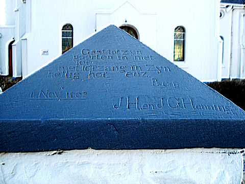

In 2007 het Jan von Henning van Nederland vir ons heelwat gegewens gestuur oor die Von Henning stam van Thuringia, Duitsland. Hierdie Henning stam kan teruggespoor word na 1575. Caspar Henning word as die stamvader van hierdie familie beskou. Hy was 'n handelaar te Frankenhausen, naby Rudolstadt. Dit val in die Thuringia streek aan die Oostekant van Duitsland – in die ou Oos-Duitsland. Caspar was vir baie jare die burgemeester van Rudolstadt. Hy het twee seuns gehad, Bartholomeus Henning en Laurentius Henning. Laurentius is in 1660 tot die Pruisiese adelstand in Wene (Oostenryk) verhef. Sy van (en dié van sy nasate) het dus van hier af verander na Von Henning auf Schonhoff, terwyl sy broer, Bartholomeus (en dié se nasate) se van Henning gebly het.
Bartholomeus Henning was soos sy pa baie jare lank burgemeester van Rudolstadt en sy seun, Andres was die derde geslag Henning wat burgemeester van Rudolstadt geword het.
Laurentius en sy nasate het vir baie jare gewoon in Rudolstadt, Wandersleben en Gotha. Een van sy nasate het teen ongeveer 1800 na Nederland verhuis.
Onlangs ontvang ons 'n Vonkpos van Dagmar Stoll van Wandersleben in Duitsland en sy vertel vir ons dat sy en haar man die eienaar is van die huis (kasteel) wat vanaf ongeveer 1620 tot 1820 aan die Henning/Von Henning familie behoort het. Hulle gebruik die huis tans as 'n lekker en knus restourant en kuierplek.

Ons het in Nuusbrief no 101 van Februarie 2010 berig oor die monument ter ere van die Boere wat na Argentinië emigreer het, wat in Comodora Rivadavia, Argentinië opgerig is. Ons het onlangs die volgende brief uit Nederland ontvang.
Ik zal in het Engels schrijven, maar je kan in het Afrikaans of het Nederlands antwoorden als je wil ...
I am a South African living in Roermond, Limburg, and I found your information on the descendants of the Boers who live in Patagonia to be of great interest. My maternal family are Afrikaners: Pieterse is the family name. My paternal family is English.
I was trying to locate the monument to the Boer emigrants which you describe in your document 'Monument ter Ere van die Boere in Argentinië'. Alas, using the string 'Boulevard Colectividad Sudafricana' does not find the monument on current Google Maps of Comodoro Rivadavia. Eventually I did locate the monument on Wikimapia, here: http://wikimapia.org/#lang=en&lat=-45.864696&lon=-67.493944&z=18&m=b&permpoly=14844680
There the monument is called 'Monumento a los Inmigrantes Sudafricanos' and it is located at the crossroads of Rawson and Av. Alsina. I located the latitude and longitude coordinates of this position via Google Earth as follows: 45°51'52.86"S 67°29'38.26"W. Perhaps this information will be of use to you and to others to pin-point the monument. I know that it will help me when I go to The Argentine to visit the region where the Boers settled in 1902 and 1905. I plan on doing that in the next year or so. All the best ... Dave Cooper, Roermond, LIMBURG, Nederland.
Ons is oortuig dat hierdie gegewens baie interessant vir baie van ons lede sal wees – veral diegene wat nasate van die Argentynse Henning’s is.

Emeritus Ds Bjarne Fowels(73) van Hjelmeland, Noorweë is 'n volwaardige lid van die Henning Familiebond omdat hy 'n nasaat van b7.c8.d8.e1. Martha Johanna Elizabeth Henning *26-8-1857 is. Hy is baie trots op sy Henning afkoms en stuur gereeld vir ons nuus vanuit Noorweë. Ons het onlangs twee briewe van hom ontvang waarin hy vertel van georganiseerde staptogte waaraan hy, sy seun en kleinseun deelgeneem het. Eerstens het hy, sy seun Brynjar en kleinseun Håkon (uitgespreek Haakon) aan die baie beroemde Vierdaagse Mars in Nijmegen, Nederland gaan deelneem.
Have finished the Nijmegen Marathon March, De 4Daagse, in Netherlands for the 5th time. What is special is that we this year were 3 generations walking: Me (73), Brynjar (47) and his son Håkon (12). Håkon was the youngest Norwegian participant ever in this 4 days long march. He was walking with his grandfather 126 km. That is a long distance for a young boy, who is also small in size for his age.
Håkon's father, Brynjar, medical doctor, army major and parachuter, had to walk the military distance, 164 km in full uniform and with 10 kg weight (read: sand) in his rucksack. However, parts of the route we could walk together.
I had been dreaming of getting some of our grandchildren with me on this march. This year the dream came true. I have never heard of any other Norwegians walking this tough march 3 generations together. It was my 5th time and Brynjar's 4th.
- I decided I wanted to obtain the participant medal, sand Håkon.
"Willen is kunnen" is the motto for the march. - And I made it, said a proud Håkon.
The Norwegian major-general Kristin Lund, General Inspector for the Norwegian Home Forces, congratulated Håkon as the youngest Norwegian ever to fulfill the march. Also others noticed the three marchers.
Just before the finish in Via Gladiola, Håkon was invited to the tribune to shake hands with the Lord Mayor of Nijmegen, who congratulated the young man with this great achievement. Then he gave him a special edition of "Donald Duck in Gelderland", an amusing story of Donald interfering De 4Daagse march in Nijmegen and thus making a lot of fuss.
46.000 participants from 70 countries had registered for this year's march. 39.396 fullfilled. The march goes on asphalt and concrete surface. Sore feet and blisters are always a problem, but all three avoided this without any problem. The temperature was up to 29 degrees this year, but then the asphalt can be 50.
The Nijmegen march was first arranged in 1909 and has been arranged every year since, except during the war years. The march is an endurance test for the military elite forces. It is the biggest sport arrangement in the Netherlands, and parts of the route follow the same route as the liberation army in WW2 Operation Market Garden). Therefore foreign guests and soldiers in uniform are especially well received. About 1,5 million people travel to Nijmegen to watch the march and take part in the festivities.
Once Nijmegen was a Roman town, and for 1.000 years the Romans' most western stronghold. Excavations still recover remnants from that age.
In sy tweede brief vertel Ds Bjarne Fowels dat hy en sy kleinseun Håkon ook aan 'n twee dae lange staptog, "The Saga March" deelgeneem het. Die roete strek van Jämtland in Swede, oor die berge tot by Stiklestad in Noorweë. Tydens die staptog het hulle by 'n besonder interessante plaas en kerk verbygeloop — 'n Henning plaas en kerk! Hier is Bjarne se brief:
It is the walkers' Tour de France, and nearly a National day in the Netherlands. Rejoicing and show four days to an end, carneval, music and fun all the way. More than 70 stages and live music along the route.
Have done another walk with Håkon (Brynjar's son). Brynjar wanted to join us, but had to go to London. This was a 2 day walk called "The Saga March". (25 x 2 km). The march started in Jämtland, Sweden, and we walked across the mountain to Stiklestad, Norway.
During the march we stayed with some friends, some 25 km away. We rented a car and along the road we passed the dorp Henning.
Henning Church (Norwegian: Henning kirke) is a parish church in the municipality of Steinkjer in Nord-Trøndelag county, Norway. It is located in the village of Vekre on the farm, Henning. The church is part of the Henning parish in the Nord-Innherad deanery in the Diocese of Nidaros.
The white wooden church was constructed in 1872 and designed by Rasmus M. Overrein. It was built on a site that has been the location of several churches since (at least) the 1200s. The first record of the existence of the church dates back to 1289 when it was called Bagabu church, the old name for the Henning area
See article about Henning Church at: http://en.wikipedia.org/wiki/Henning_Church

b9.c1.d2.e7.f1.g3.h3. Willem Taljaard Stopforth Henning *6-6-1961 is landwyd bekend as Tappe Henning. Hy is 'n gewese internasionale rugbyskeidsregter en was tot onlangs Suid-Afrika se verteenwoordiger op die Internasionale Rugbyraad se komitee vir skeidsregtersake, waar hulle alle internasionale skeidsregters beoordeel en gradeer. Hulle bepaal ook die reëls vir rugby.
Dit het nou bekend geword dat Tappe deur die rugby owerhede in Skotland aangestel is as daardie land se hoof van Skeidsregtersake. Hy sal dus intensief betrokke wees by die poging om rugby in Skotland reg te ruk.

b1.c6.d12.e3.f2. Lourens Adriaan Francois Henning *17-8-1930 was die bevelvoerder van die eskader vliegtuie wat gedurende 1971 tydens 'n oefening vir die tienjarige herdenking van republiekwording, in 'n ongeluk teen Tafelberg vasgevlieg het. Ons kon nooit kontak met enige van Lourens se nasate maak nie. Gedurende 2012 het ons in die Haantjie gevra of daar enige van ons lede is wat enige leidraad ten opsigte van Lourens se vrou en kinders kon verskaf. 'n Sekere Martin Viljoen het op die Internet van ons soektog gelees en vir ons heelwat gegewens gestuur. Ons het dus in Haantjie no 114 van Mei 2013 oor sy mededelings berig. Ons kon egter steeds nie kontak maak met enige nasate nie.
Onlangs kry ons 'n vonkpos van Irene van Zyl — sy is die oudste dogter van wyle Lourens Henning. Haar brief lui as volg:
Dit was 'n wonderwerk dat my broerskind, Marho- jean, my ingelig het dat sy op die Internet was om detail te probeer bekom ten opsigte van die Henning familie agtergrond.
Sy is die dogter van my oorlede boetie Jan Steyl Henning en Marietjie Henning (neé Smit). Martin Viljoen is korrek - Jan Steyl is inderdaad tragies oorlede in 'n motorongeluk in die ouderdom van slegs 28 jaar op 5 September 1997. Jannie se vroutjie, Marietjie, was saam met hom in die motor en het alhoewel baie ernstige beserings, wonderbaarlik oorleef. Marho-jean was toe maar 3 jaar oud.
Ek is besig om die opvolg besonderhede van die “verdwone spelde” saam te stel.
Terwyl u in Centurion(Verwoerdburg) woonagtig was, het ek eenkeer met u 'n kort gesprek gehad by die Stadsraad se Lisensiekantore – ek wonder of u dit onthou.
Ek sal dit besonder op prys stel indien u intussen vir Martin Viljoen my kontakbesonderhede kan deurgee of my voorsien van 'n epos adres/kontaknommer vir hom. My broer, Lourens Henning(57), onthou vir Martin baie goed en ek sal graag met Martin se pa, oom Bryjan Viljoen, wil kommunikeer. Ek wonder ook al jare oor wat van hulle geword het omdat hulle sulke spesiale vriende was.
Irene kon natuurlik vir ons volle besonderhede verstrek van die families van al vyf kinders van Lourens Henning en sy vrou Rhona. Op ons beurt kon ons haar en Martin Viljoen in verbinding bring.

Baie dankie aan almal wat oor die afgelope drie maande vir ons bydraes aangestuur het — veral diegene wat ruimskoots bygedra het. Soos gewoonlik meld ons graag die name van almal wat ruimskoots bygedra het. Ons noem graag die naam van TJ (Tjaart) Henning van Sinoville, Pretoria, 'n Lewenslange lid — R1 000.00
'n JA Henning het op 30 September 2013 'n bedrag van R300.00 in die Familiebond se rekening gedeponeer sonder om sy lidnommer te verstrek. Ons het verskeie JA Henning’s op rekord en kan gevolglik nie hierdie een identifiseer nie. Laat weet asseblief vir ons wie u is. In elk geval, baie dankie vir hierdie pragtige bydrae
Baie dankie ook aan ons drie lede – Jan Andries Henning van Leraatsfontein, Jan Hendrik Henning van Glenstantia en Past Antonie Henning van Rietfontein, Pretoria wat so gereeld soos klokslag elke maand per debietorder bydra. Selfs 'n klein debietorder van R20.00 per maand is van groot waarde vir die familiebond.
Ons bankbesonderhede is as volg: ABSA Bank Villiersdorp (Takno 334 612) Rekeningnaam – Henning Familiebond, Rekeningno 2890 610 423

'n Baie trotse oupa, Jan Andries Henning van Leraatsfontein het vir ons laat weet dat sy seun b5.c1.d5.e3.f1.g1.h2.i3. Conrad Henning *17-3-1983 en sy vroutjie, Barinda Sophia (gebore Opperman) *23-5-1983 onlangs weer 'n babaseuntjie – hulle tweede een - ryker geword het. Klein Werner is op 23 April 2013 te Pretoria gebore.

Ons het verneem dat b1.c3.d8.e7.f3.g1. Pieter Hendrik Barend Henning *20-6-1944 op 9 Julie 2012 in Gaborone, Botswana oorlede is. Pieter en sy vrou Maria Magdalena (gebore Fourie) is in 1967 in Gaborone getroud en het sedertdien daar gewoon. Hy was aanvanklik 'n slagter en hulle het saam hulle eie besigheid, Henning’s Butchery bedryf. Later jare het hy egter aangesluit by sy twee broers in hul supermark besigheid, Payless Group. Na Pieter se dood het sy weduwee in Gaborone aangebly.

Ons het in die vorige Haantjie berig oor Mary-Ann Henning (50) eggenote van b7.c8.d8.e1.f2.g2. Stanley Henning van Wierdapark, Centurion wat die 2013 Comrades Marathon voltooi het. Ons het nou verneem dat Mary-Ann in Julie 2013 aan die “Washie 100” wedloop by Oos-London deelgeneem het. Dit is 'n wedloop oor 161 kilometers wat mens binne 26 ure moet voltooi. Dit is een van die mees uitdagendste wedlope wat mens kan aandurf. Hulle het die Vrydagaand 17:00 begin en moes voor 19:00 uur die Saterdag by die wenpaal aankom. Hulle hardloop dus deur die hele nag. Mary-Ann se dogter, Anél was heelpad haar hulp, wat die kos, drinkgoed, smeergoed vir die seer spiere, ensovoorts moes aandra, morele ondersteuning gee, moed inpraat en selfs lang ente saamdraf — selfs in die stikdonkerte van die nag.
Sy het die wedloop uiteindelik in 24 uur en 53 minute voltooi. Soos ons Mary-Ann al leer ken het, het sy elke oomblik van die wedloop geniet, al was sy soms op moedverlore vlakte, wanneer die spiere en die ledemate net nie meer wou saamwerk nie.
Ons is trots op jou Mary-Ann. Om op 50-jarige leeftyd nog sulke strawwe wedlope aan te pak, sit nie in enigeen se broek nie.


b7.c2.d3.e5.f2.g3. Pieter Emile Henning van Randburg toer gereeld deur die hele land. Hy het onlangs deur die Noord-Oos Kaap gery en ook by Jamestown aangedoen. By die NG Kerk, Jamestown sien hy toevallig dat die name van twee Henning’s gegraveer is op een van die pilare by een van die drie hekke wat toegang verleen tot die kerkterrein. Die inskripsie lui as volg: Gaat tot sy poorten in met lof. Met lofzang in zyn heilig hof, enz. Ps 100:4 en dan die datum 11 November 1902 en die name JH en JG Henning.
Ons kon nog nie stawende bewyse vir 'n verklaring vir hierdie inskripsie op die pilaar kry nie, maar vermoed dat die twee here dalk die heining opgerig het — as mens na die Bybelteks kyk wat hulle gebruik het. Daar word vermoed dat dit b1.c3.d11.e1. Jan Hendrik Henning *9-3-1869 en b7.c1.d2. Johannes Gerhardus Henning *29-4-1833 was. Jan Hendrik Henning het op die familieplaas Elandshoek, tussen Aliwal-Noord en Jamestown geboer, terwyl Johannes Gerhardus Henning veel nader aan Jamestown, op die plaas Modderpoort geboer het.

Ons hoop almal het reeds 11 Oktober 2014 in hul dagboeke gemerk as die dag wat ons by die Voortrekkermonument in Pretoria bymekaarkom vir die vierde landwye Henning Familiefees.
Ons pragtige feeslogo is deur Anél Henning, dogter van Stanley – en Mary-Ann Henning van Wierdapark, Centurion ontwerp.
Propageer ons fees asseblief so wyd as wat u kan. Ons slagspreuk vir die fees sal wees:
250 jaar in Suid-Afrika en nie van plan om te vlug nie!